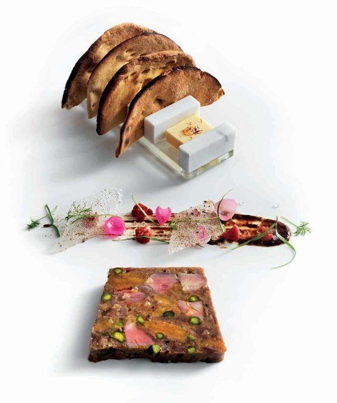

Duck terrine (Thandi jal murgha)

I often get stick from Mr Vir Sanghvi, my favourite Indian journalist and philanthropist, for recipes like this, which he calls ‘Frenchifying’ Indian flavours. I respect and admire his opinions, but you really have to taste this Benares classic to understand how the flavours work with each other, albeit with European techniques. This is a recipe to prepare for special occasions.
To serve
Begin this recipe at least a day before you plan to serve, because it has to chill overnight. Preheat the oven to 180°C. Heat 1 tablespoon of the sunflower oil in a large ovenproof frying pan. Season the duck breasts with salt and pepper, then fry for 2 minutes on each side to colour. Transfer to the oven and roast for 2 minutes. Set aside to rest until completely cool, then cut each breast into 2 lengthways strips and chop. Set aside.
Heat the remaining 1 tablespoon oil in a saucepan, add the nigella seeds and sauté over a medium heat until they crackle. Add the onion and sauté for 8–10 minutes until softened and light brown. Add the coriander, chilli powder and turmeric, and sauté for a further minute, then stir through the mango pickle. Add the confit duck meat and stir for 5–6 minutes until it is incorporated and breaks down into thin strands. Remove from the heat and spread this mixture out on a flat tray to cool completely.
Meanwhile, pour boiling water over the dried apricots and leave to soak for 5 minutes, or until they are plump and soft. Drain them well, then roughly dice. Add them, the pistachios and the duck fat to the cooled duck mixture, cover and chill for at least 10 minutes.
Prepare a 900g loaf tin by lining it with 2 layers of cling-film, leaving plenty of overhang. Use your hands to gently mix the duck breast slices and the confit duck mixture together, then pack it into the loaf tin, pressing down gently. It doesn’t have to be ordered, but you want the duck breast meat distributed throughout. Fold the overhanging cling-film over the top. Place another loaf tin on top and pop a few cans from the pantry into the top tin to act as a weight. Place the stacked tins in the fridge overnight to set.
When ready to serve, brush individual plates with the tamarind chutney and add cauliflower florets, pickled onions and shards of sugar tuilles to each. Place a slice of the terrine on the side, then serve with the hot toast and the spiced butter. Sprinkle with ginger lime 'caviar' if you like.